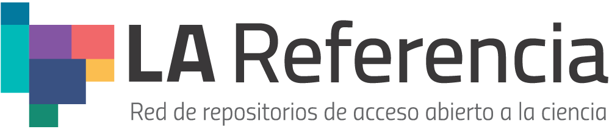
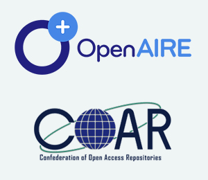

Módulo 3 . Aula 5
Experiências latino-americanas do Acesso Aberto
Módulo 3 . Aula 5
Experiências latino-americanas do Acesso Aberto
 Objetivos da
aula
Objetivos da
aula
Nesta aula abordaremos as iniciativas e a importância do modelo de publicação científica em Acesso Aberto para a América Latina, com destaque para o Brasil. Ao final desta aula você será capaz de:
- Identificar o pioneirismo latino-americano no movimento do Acesso Aberto e seu papel de destaque na promoção da modalidade não comercial.
- Conhecer iniciativas importantes para a consolidação do Acesso Aberto na região e no Brasil.
- Reconhecer a tendência ao trabalho em rede para construção de soluções regionais que articulam vários países.
- Compreender como as iniciativas na região impulsionaram o movimento do Acesso Aberto nas publicações científicas.
O pioneirismo da América Latina
A expressão “Acesso Aberto” começou a ser usada e disseminada a partir da Budapest Open Access Initiative (BOAI) em 2002, na qual a comunidade científica defendeu o acesso à publicação de artigos científicos sem a cobrança de taxas. Na declaração, foram indicadas duas estratégias para promover Acesso Aberto: o depósito da produção científica em repositórios institucionais e a publicação em periódicos científicos de Acesso Aberto.
No entanto, antes mesmo da publicação da BOAI, houve uma série de iniciativas importantes na América Latina que já demonstravam preocupação com as limitações ao acesso à produção científica e o interesse em utilizar a internet para agilizar e tornar mais democrática a circulação do conhecimento
Foi a partir da década de 1980, devido a uma grave crise econômica mundial, que universidades e bibliotecas tiveram seus orçamentos reduzidos.
Com a recessão, universidades e bibliotecas passaram a ter grandes dificuldades para manter seus acervos atualizados com periódicos científicos e livros. A recessão econômica foi a causa da chamada “crise dos periódicos” e produziu, ao longo dos anos, uma tensão permanente entre cientistas, bibliotecas e editoras comerciais, culminando em 2002 com a Budapest Open Access Initiative (BOAI).
Iniciativas latino-americanas anteriores à BOAI
Veja a seguir as iniciativas latino-americanas anteriores à BOAI.
A Declaración de San José hacia la Biblioteca Virtual en Salud é um dos primeiros manifestos em apoio à ideia de Acesso Aberto e anterior à BOAI.
Durante o IV Congresso Regional de Informação em Ciências da Saúde (CRICS), realizado na Costa Rica em março de 1998, o Centro Latino-Americano e do Caribe de Informação em Ciências da Saúde, mais conhecido como Bireme, divulgou a Declaração de São José, comprometendo-se a construir uma biblioteca virtual para democratizar o acesso à informação científica e técnica na área. Nessa reunião, os Centros Coordenadores Nacionais, integrantes da Bireme, com o objetivo de facilitar o acesso, firmaram o compromisso de construir, em cooperação com a Biblioteca Virtual em Saúde (BVS) “o mais amplo acesso ao melhoramento permanente da saúde de nossos povos” (Declaración de San José, 1998, p. 92).
A expertise da Bireme, a partir da criação da BVS e em outras iniciativas na área da informação científica em saúde, como a base de dados em Literatura Latino-Americana do Caribe em Ciências da Saúde (Lilacs), possibilitaram a formação de recursos humanos e técnicos que culminaram com a criação da SciELO.
O projeto SciELO foi lançado em 1998, uma parceria entre a Bireme e a Fundação de Amparo à Pesquisa de São Paulo (Fapesp), com o objetivo de ampliar a visibilidade das publicações acadêmicas nacionais por meio da internet, que começava a se popularizar. No momento inicial, o SciELO foi responsável por estimular a migração dos periódicos do formato impresso para o digital, cujo conteúdo passava a ser disponibilizado integralmente em Acesso Aberto na web. Um dos objetivos, portanto, era posicionar o “mais rapidamente possível, a comunicação brasileira no movimento internacional da publicação eletrônica” (Packer et al., 1998, p. 107).
Até o final da década de 1990, predominava a publicação de revistas científicas em papel, com cobranças de assinaturas individuais e institucionais. Em 1996, segundo levantamento realizado pelo Centro Brasileiro do ISSN, havia dez títulos de periódicos científicos registrados no suporte eletrônico, sendo somente dois deles disponíveis na web, os outros periódicos eram disponibilizados em CD-ROM ou em disquete (Oliveira, 1996, p. 83).
Lançado no Brasil, o desenvolvimento do projeto SciELO provocou mudanças no ecossistema da publicação científica no país e, em pouco tempo, envolveu os outros países da América Latina e do Caribe. Com a ampliação de sua atividade, tornou-se um marco na história do periodismo científico da região e, no momento (fevereiro de 2025), conta com 324 periódicos científicos brasileiros indexados nas áreas de Ciências Agrárias, Ciências Biológicas, Ciências da Saúde, Ciências Exatas e da Terra, Ciências Humanas, Letras Linguísticas e Artes, Ciências Sociais Aplicadas e Engenharias.
A iniciativa de criação da SciELO contribuiu para o aprimoramento das revistas científicas da América Latina e consolidou o modelo de publicação acadêmica em Acesso Aberto, com o conteúdo disponível integralmente na internet para seus leitores.
Caso queira recordar sobre o SciELO, retorne a “Implicações para a Comunicação Científica” deste módulo.
Criada em 2002 e mantida pelo Instituto Brasileiro de Informação em Ciência e Tecnologia (Ibict), a Biblioteca Digital Brasileira de Teses e Dissertações (BDTD) integra e dissemina os textos completos de teses e dissertações defendidas nas instituições brasileiras de ensino e pesquisa. Até fevereiro de 2025, compunham a biblioteca 153 instituições com a disponibilização de 726.540 dissertações, 283.940 teses, além de 1.010.480 documentos.
Iniciativa da Coordenação de Aperfeiçoamento de Pessoal de Nível Superior (Capes), o Banco de Teses da Capes é uma base de dados referenciais que permite recuperar os registros de teses e dissertações defendidas nos Programas de Pós-Graduação do Brasil desde 1987 — as mais recentes estão disponíveis na íntegra e as mais antigas apenas referenciadas. Até aqui, mencionamos algumas iniciativas de Acesso Aberto desenvolvidas na América Latina, antes da divulgação da BOAI. Como veremos a seguir, outros projetos importantes surgiram na região e possibilitaram a continuidade do seu protagonismo na publicação em Acesso Aberto.
Acesso Aberto não comercial: um modelo de publicação predominante na América Latina
Em 2002, o governo mexicano promulgou a Lei de Ciências e Tecnologia com o intuito de fortalecer a atividade científica no país, assegurando orçamento para a disseminação do conhecimento científico nacional e em nível ibero-americano. Esse contexto beneficiou revistas científicas e possibilitou a criação da Red de Revistas Científicas de América Latina, El Caribe, España y Portugal (Redalyc).
Red de Revistas Científicas de América Latina, El Caribe, España y Portugal - Redalyc
Lançada em 2003, como um projeto interinstitucional na Universidad Autónoma del Estado de México (UAEMEX) e sob o lema “A ciência que não se vê, não existe” (Becerril-García et al., 2012), a Redalyc foi criada com a preocupação de impulsionar a visibilidade das publicações científicas editadas no modelo de Acesso Aberto nos países ibero-americanos.
Assim como a SciELO, essa iniciativa possui critérios para que os periódicos científicos sejam indexados em sua base, como a exigência de revisão por pares e artigos que resultam de pesquisas científicas originais. Além disso, ambos os projetos proporcionaram maior profissionalização das revistas científicas e de suas equipes editoriais no modelo de publicação em Acesso Aberto (Beigel; Packer; Gallardo; Salatino, 2024).
Em fevereiro de 2025, as bases SciELO e Redalyc possuíam indexadas respectivamente, 1.654 e 1.745 periódicos científicos, com uma produção científica diversificada na qual predominam as revistas publicadas no modelo de Acesso Aberto diamante (Beigel; Packer; Gallardo; Salatino, 2024). Nessa modalidade de publicação, o acesso ao conteúdo das revistas é completamente livre de taxas, tanto para a submissão dos manuscritos, quanto para acessá-los.
A prática de publicar em Acesso Aberto se estende por toda a América Latina, portanto, a produção, publicação, distribuição e consumo da literatura científica opera de forma diferente na região, se compararmos aos países do Norte. O surgimento pioneiro da SciELO e Redalyc consolidou o Acesso Aberto não comercial, que é financiado principalmente com os recursos públicos destinados à educação e à pesquisa, em sua maioria, por meio de instituições científicas (Lopes; Becerril-García, 2020).
Os esforços para a criação de projetos como a BVS, a SciELO e a Redalyc ressaltam a importância da articulação regional entre os países da América Latina para a disseminação de políticas e diretrizes em defesa do Acesso Aberto não comercial.
Acesso Aberto não comercial: um modelo de publicação predominante na América Latina
O Instituto Brasileiro de Informação em Ciência e Tecnologia (Ibict) é uma instituição pública federal de pesquisa ligada ao Ministério da Ciência, Tecnologia e Inovação (MCTI), cuja missão é “promover a competição, o desenvolvimento de recursos e infraestrutura de informação em ciência e tecnologia para a produção, socialização e integração do conhecimento científico e tecnológico”. Nas últimas décadas, o instituto apoiou a expansão do número de repositórios institucionais e de revistas científicas em Acesso Aberto mantidas por universidades e institutos de pesquisa.
Algumas ações foram criadas para ampliar os repositórios institucionais, e outras para apoiar revistas científicas. Veja a seguir.
Para atender às demandas imediatas das instituições, que não contam com infraestrutura própria, o Ibict criou o Repositório Comum do Brasil (Deposita) e estimula a criação de um repositório institucional próprio quando a quantidade de depósitos de uma mesma instituição se torna expressivo.
Em 2014, o Ibict também promoveu a criação da Rede Brasileira de Repositórios Institucionais (RIAA), que, em 2022, foi renomeada para Rede Brasileira de Repositórios Digitais (RBRD). A rede é composta por cinco sub-redes, sendo elas: Norte, Nordeste, Centro-Oeste, Sul e Sudeste, cuja atuação amplia e regionaliza as ações pelo Acesso Aberto. Em levantamento realizado em 2024 (Sousa et al., 2024, p. 44), a RBRD conta com 181 instituições participantes distribuídas entre suas cinco sub-redes.
As ações incluíram tradução, disseminação e capacitação no uso do software de gestão de revistas científicas Open Journal System (OJS), que, na sua versão brasileira, se chama Sistema Eletrônico de Editoração de Revistas (SEER), e do software DSpace utilizado em repositórios institucionais.
Outras ações do Ibict no campo do Acesso Aberto são:
- Sistema Eletrônico de Teses e Dissertações (TEDE) - Desenvolvido em 2003 com o objetivo de promover a implantação de bibliotecas digitais de teses e dissertações nas instituições de ensino e pesquisa no país e sua integração à BDTD.
- Portal Brasileiro de Publicações Científicas em Acesso Aberto (Oasisbr) - Lançado em 2006 como um sistema agregador de metadados, o Oasisbr permite consultar os dados de pesquisa em Acesso Aberto publicados em revistas científicas, repositórios de publicações acadêmicas e de dados científicos, além de teses e dissertações.
- Diretório de Políticas Editoriais das Revistas Científicas Brasileiras (Diadorim) - Serviço que disponibiliza as políticas editoriais adotadas pelos periódicos científicos brasileiros em Acesso Aberto, podendo ser consultadas por autores, editores e gestores de repositórios institucionais.
Você sabe a razão do nome “Diadorim”?
Diadorim é um dos personagens do livro Grande sertão: veredas, um dos romances clássicos da literatura brasileira, cujo autor é João Guimarães Rosa. O nome foi escolhido para seguir a tendência internacional de nomear diretórios e serviços de informação científica homenageando obras literárias do país no qual o sistema foi desenvolvido.
Uma rede de repositórios latino-americanos: LA Referencia

A Rede Latino-americana de Ciência Aberta (LA Referencia) é resultado de um projeto apresentado pela Cooperación Latinoamericana de Redes Avanzadas (CLARA), ao Banco Interamericano de Desenvolvimento (BID), dentro da iniciativa Bens Públicos Regionais (BRP).
Seu objetivo é disponibilizar a produção científica da América Latina, financiada com fundos públicos, em Acesso Aberto.
Para tal, LA Referencia atua por meio da cooperação e articulação de uma rede federada de repositórios institucionais com base em acordos regionais e estratégias nacionais de Acesso Aberto. Suas ações estruturantes estão baseadas em três pilares:
Desenvolvimento de tecnologia de coleta e plataforma agregadora.
Diretrizes e coleta de metadados.
Acordos de interoperabilidade entre os países latino-americanos e Portugal.
Em fevereiro de 2025, o portal agregador de LA Referencia reúne documentos provenientes da produção científica dos 12 países que compõem a rede, com 5.185.246 documentos, entre artigos, relatórios, teses e dissertações de mestrado. Conforme Amaro et al. (2013 p. 128-129), a agenda de trabalho contempla:
- Estabelecimento de uma estratégia comum, que levou em consideração os diferentes níveis de desenvolvimento do tema em cada país;
- Realização de um diagnóstico regional para formulação de acordos;
- Criação de uma estratégia de capacitação.
- Criação de padrões de metadados e interoperabilidade próprios;
- Estabelecimento das tipologias documentais a serem coletadas;
- Estabelecimento de nódulos nacionais para coletas de metadados;
- Desenvolvimento de um coletador próprio.
Articulação latino-americana com a Europa

No ano de 2015, LA Referencia participou do projeto Open Access Infrastructure for Research in Europe (OpenAIRE), cujo objetivo era fortalecer a relação das infraestruturas europeias de Acesso Aberto com outras regiões do mundo, em particular com a América Latina e os Estados Unidos. A partir dessa articulação e da adoção das diretrizes OpenAIRE, a literatura presente no portal da LA Referencia passou a ser coletada pelo projeto europeu.
LA Referencia é um marco de referência sobre a produção científica latino-americana e participa ativamente da Confederation of Open Access Repositories (COAR), organização mundial que promove Acesso Aberto, visibilidade e disponibilidade de resultados de pesquisas científicas em redes globais de repositórios digitais.
Atualmente, LA Referencia passou a atuar na promoção de dados abertos. Desde 2018, um acordo com a Organização Europeia para a Pesquisa Nuclear (CERN), visa promover ações comuns em Ciência Aberta e facilitar o uso do Zenodo como repositório de dados científicos para pesquisadores e instituições da América Latina.
Como citar esta aula:
CERQUEIRA, Roberta Cardoso. Acesso Aberto e a experiência latino-americana. In: JORGE, Vanessa; CLINIO, Anne (coord.). Programa de Formação Modular em Ciência Aberta. Módulo 2. Acesso Aberto. 2. ed. Rio de Janeiro: Fiocruz, 2025. Aula 5. Disponível em: https://mooc.campusvirtual.fiocruz.br/rea/ciencia-aberta-2ed/modulo3/aula5.html. Acesso em: 14 nov. 2024.